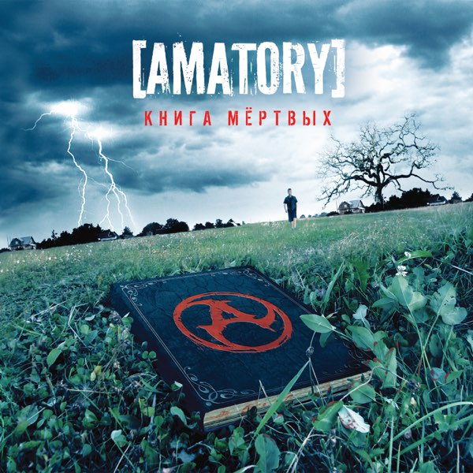

Дискография
Все альбомы и синглы группы
Студийные альбомы

2003
Вечно прячется судьба
45:12 | 11 треков
- 1. Вступление
- 2. 7 шагов до...
- 3. Фобос
- 4. Невыносимая лёгкость
- 5. Не убивай Ещё 6 треков...

2006
Книга мёртвых
52:34 | 12 треков
- 1. Баллада о земле
- 2. За тобой
- 3. Осколки
- 4. Мой дом
- 5. Книга мёртвых Ещё 7 треков...

2010
Неизбежность
48:21 | 10 треков
- 1. Сила притяжения
- 2. Неизбежность
- 3. Дыши
- 4. Отражение
- 5. Без обид Ещё 5 треков...
2016
7
55:08 | 14 треков
- 1. Сигнал
- 2. 7
- 3. Секрет
- 4. Падающая тень
- 5. Твой сон Ещё 9 треков...

2023
Инкарнация
62:15 | 15 треков
НОВИНКА
- 1. Чёрный рассвет
- 2. Инкарнация
- 3. Осколки 2.0
- 4. Бездна
- 5. Эхо Ещё 10 треков...
Синглы и EP
Время (Single)
2005
1. Время
2. Время (Acoustic Version)
За тобой (Single)
2007
1. За тобой
2. За тобой (Live)
Дыши (EP)
2010
1. Дыши
2. Отражение
3. Неизбежность (Demo)
Сигнал (Single)
2016
1. Сигнал
2. Сигнал (Instrumental)
Сборники и компиляции
BEST OF
The Best (2001-2011)
2011
Двойной альбом с лучшими песнями за 10 лет
24 трека
2 CD
LIVE
Live in Moscow 2018
2019
Концертная запись в Stadium Live
18 треков
1 CD + DVD
Хронология релизов
2003
Вечно прячется судьба
Дебютный альбом. Продано более 50,000 копий.
2006
Книга мёртвых
Прорывной альбом. Золотой статус в России.
2010
Неизбежность
Экспериментальный период. Электронные элементы.
2016
7
Возвращение к истокам. Самый длинный альбом.
2023
Инкарнация
Новый этап. Современный звук, философские тексты.
Прослушать онлайн
Spotify
Более 500,000 ежемесячных слушателей
Apple Music
Все альбомы в lossless качестве
YouTube Music
Официальные клипы и live-выступления
VK Music
Эксклюзивные материалы для России
15M+
Прослушиваний в Spotify
50M+
Просмотров на YouTube
200K+
Поклонников VK
Что говорят критики
"«Инкарнация» — это возвращение AMATORY в лучшей форме. Группа доказала, что может эволюционировать, не теряя своего лица."
"Альбом «7» демонстрирует технический рост музыкантов. Это самый сложный и концептуальный релиз в их дискографии."
"«Книга мёртвых» до сих пор остаётся культовым альбомом, определившим звучание русского альтернативного метала 2000-х."